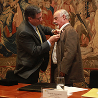

Secretaría General
Recopilación de las principales decisiones y temas tratados por el Comité Directivo y el Consejo Académico, entre el 22 de agosto de 2013 y el 20 de noviembre de 2013. Así mismo, se incluyen algunos hechos de interés.
|
| Boletín electrónico de la Universidad de los Andes - No. 35 - Diciembre de 2013 Secretaría General |
| Carta del Rector al Consejo Superior No. 67-13 Recopilación de las principales decisiones y temas tratados por el Comité Directivo y el Consejo Académico, entre el 22 de agosto de 2013 y el 20 de noviembre de 2013. Así mismo, se incluyen algunos hechos de interés. |
| DISTINCIONES | ||||||||||||||||||||||
|  | Medalla de Oro de la Universidad de los Andes al Mérito CívicoEl Comité Directivo aprobó otorgar al Teatro Libre de Bogotá la distinción de Medalla de Oro de la Universidad de los Andes al Mérito Cívico como reconocimiento a su aporte fundamental al desarrollo de las artes y la cultura en Colombia, y celebrar y resaltar una relación cercana, mutua y muy productiva con la Universidad de los Andes. |
|||||||||||||||||||||
|
Grados Summa Cum LaudeEl Consejo Académico aprobó las solicitudes de las facultades para otorgar grados Magna Cum Laude y Cum Laude, distinciones de Excelencia Semestral, distinciones Ramón de Zubiría y distinciones Alberto Magno. También aprobó la entrega de la distinción Summa Cum Laude a los siguientes estudiantes de pregrado:
Los estudiantes Camilo Orlando Solano Vargas, graduando de la maestría de Mercadeo de la Facultad de Administración y Julián Alberto Castillo Martínez de Ingeniería Química fueron los oradores. |
|||||||||||||||||||||
|
Mención de honor de la Fundación Alejandro Ángel EscobarLos profesores Camilo Quintero, Felipe Guhl y Marco Palacios recibieron una mención de honor de la Fundación Alejandro Ángel Escobar, en el marco de los Premios Nacionales en Ciencias y Solidaridad otorgados el 2 de septiembre de 2013. |
|||||||||||||||||||||
|
Reconocimiento a la investigaciónEl pasado 3 de octubre, Juan Camilo Cárdenas y Bernardo Gómez recibieron el premio Scopus 2013, otorgado por Editorial Elsevier y Colciencias, que destaca dedicación, talento y producción científica. |
|||||||||||||||||||||
|
||||||||||||||||||||||